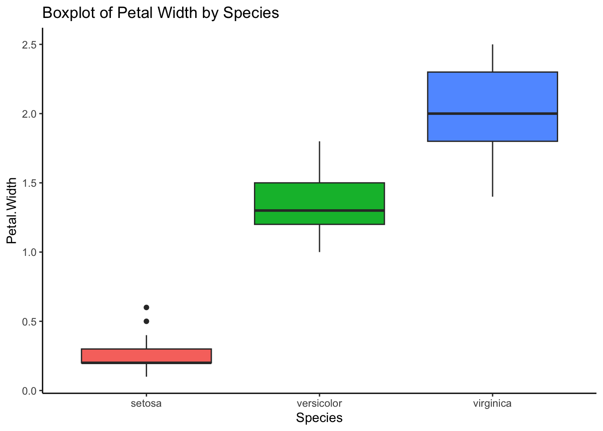
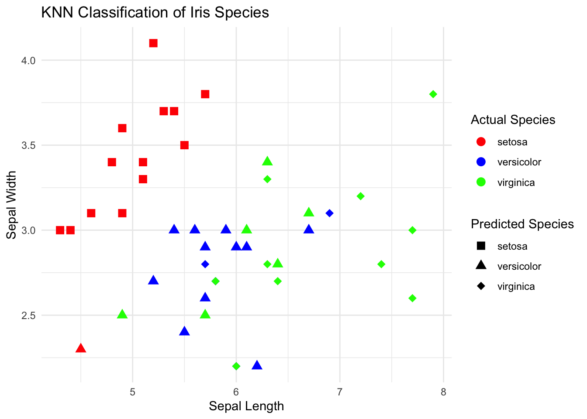
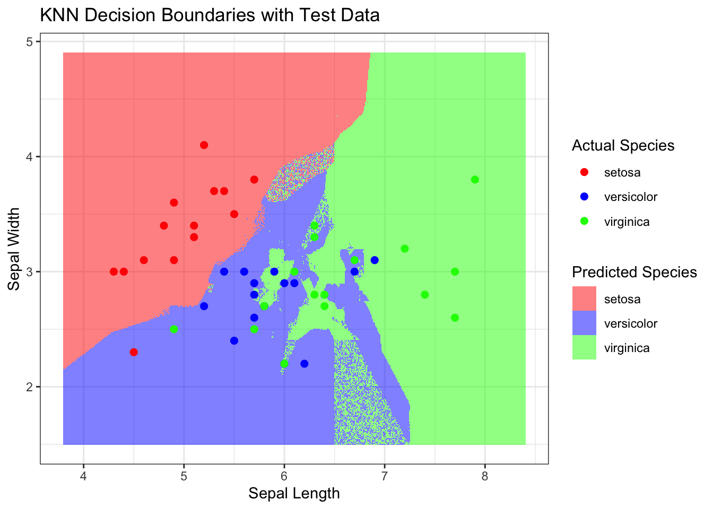
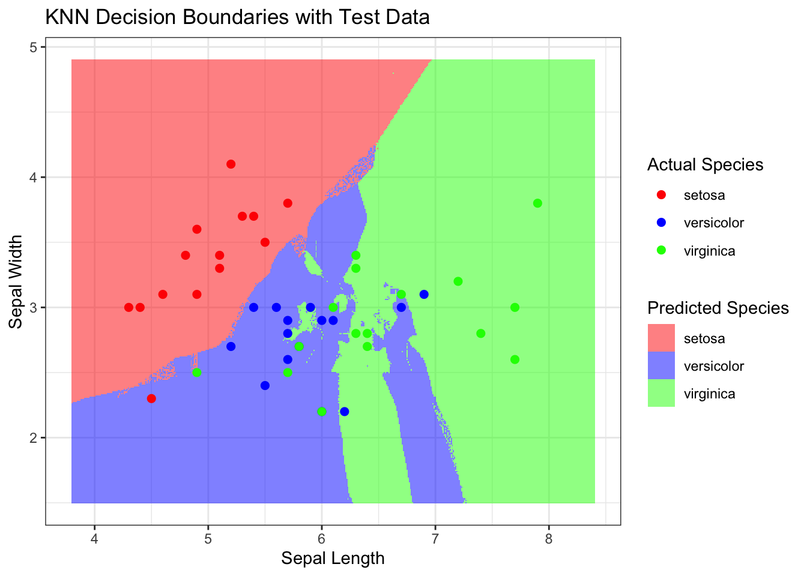

A deep dive into the K-Nearest Neighbors (KNN) algorithm, exploring its mathematical foundations and practical applications.
Author
Jacob Jameson
Published
February 1, 2024
In the realm of machine learning, few algorithms are as intuitively appealing as the K-Nearest Neighbors (KNN). It’s a method that echoes the human instinct to classify based on similarity and proximity, offering a gateway into the world of pattern recognition and predictive analytics.
The Mathematical Compass
Before we dive into the practical applications, let’s lay the mathematical groundwork that underpins these techniques—a foundation as crucial to understanding their functionality as a compass is to navigation.
K-Nearest Neighbors (KNN): A Non-Parametric Approach
KNN’s beauty lies in its simplicity and the intuitive concept of “neighborliness.” It posits that data points with similar characteristics (features) are likely to share the same outcome. Whether we’re classifying flowers based on petal sizes or predicting housing prices from neighborhood characteristics, KNN asks, “Who are your nearest neighbors?”
Mathematical Intuition:
For a given data point, KNN looks at the ‘K’ closest points (neighbors) and makes a prediction based on their majority class (classification) or average value (regression). The distance between points—Euclidean, Manhattan, or any other metric—serves as the basis for determining “closeness.”
To elaborate on this with mathematical expressions and to visualize it within a coordinate plane, let’s dive deeper:
Distance Metrics
The most common distance metric used in KNN is the Euclidean distance, which in a two-dimensional space can be expressed as:
where \(p = (p_1, p_2)\) and \(q = (q_1, q_2)\) are two points in the Euclidean plane.
For higher dimensions, the formula generalizes to:
\[d(p, q) = \sqrt{\sum_{i=1}^{n} (p_i - q_i)^2}\]
where \(n\) is the number of dimensions (features) and \(p_i\), \(q_i\) are the coordinates of \(p\) and \(q\) in each dimension.
KNN Algorithm
Compute Distance: Calculate the distance between the query instance and all the training samples.
Sort Distances: Order the training samples by their distance from the query instance.
Select K Nearest Neighbors: Identify the top \(K\) closest training samples.
Majority Vote or Average: For classification, the predicted class is the most common class among the \(K\) nearest neighbors. For regression, it is the average of the values.
Decision Boundary Visualization
In a 2D coordinate plane, imagine plotting various data points, each belonging to one of two classes. The decision boundary that KNN creates is not linear but forms curves that encircle clusters of points belonging to the same class. This can be visualized as follows:
Create a dense grid of points covering the entire plane.
Use KNN to classify each point on the grid.
Color the points differently based on the predicted class, revealing the decision boundary.
This boundary demarcates the regions of the plane where a query point would be classified as one class or the other. It’s worth noting that the shape of the boundary depends on \(K\) and the distance metric used.
K Selection
Choosing the right \(K\) is critical for the model’s performance. Too small a \(K\) leads to a highly complex model that may overfit, capturing noise in the training data. Conversely, too large a \(K\) simplifies the model excessively, potentially underfitting and missing key patterns.
The optimal \(K\) minimizes the prediction error, which can be determined through cross-validation.
By understanding the mathematical foundations of KNN and visualizing its application in a coordinate plane, we can better appreciate its flexibility and the importance of distance metrics and \(K\) selection in shaping the decision boundaries.
Exploring the Iris Dataset
The Iris dataset is a classic in machine learning and statistics, known for its simplicity and utility in demonstrating basic principles of classification. It consists of 150 observations of iris flowers, divided into three species: Setosa, Versicolor, and Virginica. Each observation includes four features: sepal length, sepal width, petal length, and petal width, all measured in centimeters.
Summary Statistics and Visualizations
Let’s start by exploring the dataset with some summary statistics and visualizations:
# Scatter plot visualizing petal width and length grouped by speciesscatter <-ggplot(iris.data, aes(x = Petal.Width, y = Petal.Length, color = Species)) +geom_point(size =3, alpha =0.6) +theme_classic() +theme(legend.position ="right") +ggtitle("Scatter Plot of Petal Dimensions by Species")print(scatter)
# Boxplot visualizing variation in petal width between speciesboxplot <-ggplot(iris.data, aes(x = Species, y = Petal.Width, fill = Species)) +geom_boxplot() +theme_classic() +theme(legend.position ="none") +ggtitle("Boxplot of Petal Width by Species")print(boxplot)

A Quick Note on Training and Testing Data
One of the pivotal steps in the machine learning workflow is the division of your dataset into training and testing sets. This practice is not just routine but foundational, ensuring that we evaluate our models accurately and fairly. But why do we take this step, and what does it achieve?
Crafting and Validating Predictive Models
The essence of machine learning lies in learning from data and making predictions. When we train a model, we are essentially ‘teaching’ it to recognize patterns and make decisions based on historical data. However, the true test of a model’s mettle is not how well it memorizes the training data, but how effectively it can apply its learned knowledge to new, unseen data. This is where the concept of generalization comes into play.
Why Not Learn from All the Data?
A natural question arises: if our goal is to make the best possible predictions, why not train our model on the entire dataset? The answer lies in the risk of overfitting. An overfitted model is akin to a student who memorizes facts for an exam rather than understanding the underlying concepts. Just as the student might struggle to apply their knowledge in real-world situations, an overfitted model performs well on its training data but poorly on any new data.
Training Set: The Learning Phase
The training set serves as the educational cornerstone for our model. It’s the data on which the model trains, learns patterns, and adjusts its parameters. For KNN, this involves storing the features and labels of the training examples to later find the nearest neighbors of unseen instances.
Testing Set: The Examination Phase
After training, we introduce the model to the testing set, a separate portion of the data withheld from the training phase. This step is the model’s exam—it’s where we assess its ability to generalize the patterns it learned during training to new examples. The performance on the testing set gives us a realistic estimate of how the model is expected to perform in real-world scenarios.
The Significance of the Split
Splitting data into training and testing sets is a critical step that balances the need for a model to learn effectively and the necessity of evaluating its predictive power honestly. By adhering to this practice, we ensure that our models are tested in a manner that mimics their eventual use on new, unseen data, providing a reliable measure of their performance and generalization capability.
End of note :)
Splitting the Data and Visualizing Decision Boundaries for k=3
Now, let’s split the dataset into training and testing sets, apply KNN classification with k=3, and visualize the decision boundary and compute the error rate. Why are we choosing k=3? It’s a common starting point, and we’ll explore the impact of different k values in the next section. We are going to work with a simplified version of the iris dataset using only three features: Sepal.Length, Sepal.Width, and Species.
# Load necessary librarieslibrary(class)library(dplyr)set.seed(513) # For reproducibility# Select features and species for simplicityiris_simplified <- iris %>%select(Sepal.Length, Sepal.Width, Species)# Split data into training and test setssample_size <-nrow(iris_simplified) *0.7# 70% for trainingtraining_indices <-sample(1:nrow(iris_simplified), sample_size)training_data <- iris_simplified[training_indices, ]test_data <- iris_simplified[-training_indices, ]# Perform KNN classification with k = 3knn_result <-knn(train = training_data[, 1:2],test = test_data[, 1:2],cl = training_data[, 3],k =3)# Add the predictions to the test_data dataframe for plottingtest_data$PredictedSpecies <-as.factor(knn_result)# Visualize the resultsggplot(data = test_data, aes(x = Sepal.Length, y = Sepal.Width)) +geom_point(aes(color = Species, shape = PredictedSpecies), size =3) +scale_shape_manual(values =c(15, 17, 18)) +# Different shapes for actual vs. predictedscale_color_manual(values =c('red', 'blue', 'green')) +labs(title ="KNN Classification of Iris Species",x ="Sepal Length",y ="Sepal Width",color ="Actual Species",shape ="Predicted Species") +theme_minimal()

Visualizing Decision Boundaries
# Plot the decision boundaries by coloring the gridx_range <-seq(from =min(iris$Sepal.Length) -0.5, to =max(iris$Sepal.Length) +0.5, by =0.01)y_range <-seq(from =min(iris$Sepal.Width) -0.5, to =max(iris$Sepal.Width) +0.5, by =0.01)grid <-expand.grid(Sepal.Length = x_range, Sepal.Width = y_range)# Predict species for each point in the gridgrid$Species <-knn(train = training_data[, 1:2],test = grid,cl = training_data[, 3],k =3)# Convert grid predictions into a factor for coloringgrid$Species <-as.factor(grid$Species)ggplot() +geom_tile(data = grid, aes(x = Sepal.Length, y = Sepal.Width, fill = Species), alpha =0.5) +geom_point(data = test_data, aes(x = Sepal.Length, y = Sepal.Width, color = Species), size =2) +scale_fill_manual(values =c('setosa'='red', 'versicolor'='blue', 'virginica'='green')) +scale_color_manual(values =c('setosa'='red', 'versicolor'='blue', 'virginica'='green')) +labs(title ="KNN Decision Boundaries with Test Data",x ="Sepal Length",y ="Sepal Width",fill ="Predicted Species",color ="Actual Species") +theme_bw()

Ok so we have visualized the decision boundaries for k=3. Now let’s compute the error rate for k=3 and then we will explore the impact of different k values.
Fine-tuning Our Approach
Having visualized how K-Nearest Neighbors (KNN) operates with (k = 3), we’ve seen firsthand the impact of the choice of (k) on our model’s decision boundaries and, consequently, its predictions. But this naturally leads us to a pivotal question: Is (k = 3) truly the best choice for our Iris classification task? Or, more broadly, how do we pinpoint the most suitable number of neighbors for any given problem?
The Significance of (k)
The parameter (k) in KNN serves as a tuning knob, adjusting the balance between the simplicity and complexity of the model. A smaller (k) makes the model more sensitive to noise in the data, potentially leading to overfitting. Conversely, a larger (k) smoothens the decision boundaries, which might simplify the model to the point of underfitting. Thus, finding the optimal (k) is crucial for achieving the best model performance.
Search for Optimal (k)
To embark on this quest, we employ a systematic approach: evaluating the model’s performance across a range of (k) values and selecting the one that minimizes error. Specifically, we compute the error rates for (k = 1) through (k = 10) on our Iris dataset. The error rate here is defined as the proportion of incorrect predictions out of all predictions made by the model on the test set.
The Process Unfolded
Iterate Over (k): We loop through each (k) value from 1 to 10, applying the KNN model to our training data and making predictions on our test data at each iteration.
Compute Error Rates: For each (k), we calculate the error rate by comparing the predicted species against the actual species in our test set.
Tabulate Results: We record the (k) values and their corresponding error rates in a table, allowing us to clearly visualize how the error rate varies with (k).
Select the Optimal (k): The optimal (k) is the one with the lowest error rate, striking the perfect balance between overfitting and underfitting for our dataset.
What This Means for Our Iris Classification Task
By undertaking this analysis, we ensure that our choice of (k) is not arbitrary but is instead data-driven and optimized for performance. This methodical approach not only enhances the accuracy of our KNN model on the Iris dataset but also exemplifies a best practice in machine learning that can be applied to various classification tasks.
# Initialize an empty data frame to store k values and theirerror rateserror_rates <-data.frame(k =integer(), error_rate =numeric())# Loop through k values from 1 to 10for (k in1:10) {# Apply KNN model predicted_species <-knn(train = training_data[, 1:2],test = test_data[, 1:2],cl = training_data[, 3],k = k)# Compute the error rate error_rate <-sum(predicted_species != test_data[, 3]) /nrow(test_data)# Add the results to the error_rates data frame error_rates <-rbind(error_rates, data.frame(k = k, error_rate = error_rate))}knitr::kable(error_rates, caption ="Error Rates for K=1 to 10")
Error Rates for K=1 to 10
k
error_rate
1
0.2888889
2
0.3111111
3
0.2444444
4
0.2444444
5
0.1777778
6
0.2000000
7
0.1777778
8
0.2222222
9
0.2000000
10
0.1777778
It looks like the error rate is lowest for (k = 5), which means that the KNN model with (k = 5) yields the most accurate predictions on the Iris dataset.
Let’s visualize our ned results and see how the decision boundaries look for (k = 5).
# Plot the decision boundaries by coloring the gridx_range <-seq(from =min(iris$Sepal.Length) -0.5, to =max(iris$Sepal.Length) +0.5, by =0.01)y_range <-seq(from =min(iris$Sepal.Width) -0.5, to =max(iris$Sepal.Width) +0.5, by =0.01)grid <-expand.grid(Sepal.Length = x_range, Sepal.Width = y_range)# Predict species for each point in the gridgrid$Species <-knn(train = training_data[, 1:2],test = grid,cl = training_data[, 3],k =5)# Convert grid predictions into a factor for coloringgrid$Species <-as.factor(grid$Species)ggplot() +geom_tile(data = grid, aes(x = Sepal.Length, y = Sepal.Width, fill = Species), alpha =0.5) +geom_point(data = test_data, aes(x = Sepal.Length, y = Sepal.Width, color = Species), size =2) +scale_fill_manual(values =c('setosa'='red', 'versicolor'='blue', 'virginica'='green')) +scale_color_manual(values =c('setosa'='red', 'versicolor'='blue', 'virginica'='green')) +labs(title ="KNN Decision Boundaries with Test Data",x ="Sepal Length",y ="Sepal Width",fill ="Predicted Species",color ="Actual Species") +theme_bw()

Conclusion
In this post, we have explored the K-Nearest Neighbors (KNN) algorithm and its application to the Iris dataset. We have seen how KNN operates by classifying new data points based on their similarity to existing data points. We have also visualized the decision boundaries of the KNN model and observed how the choice of (k) impacts the model’s predictions.
Furthermore, we have demonstrated the significance of selecting the optimal (k) value for our KNN model. By systematically evaluating the model’s performance across a range of (k) values, we have identified the most suitable (k) for our Iris classification task. This approach ensures that our choice of (k) is not arbitrary but is instead data-driven and optimized for performance.